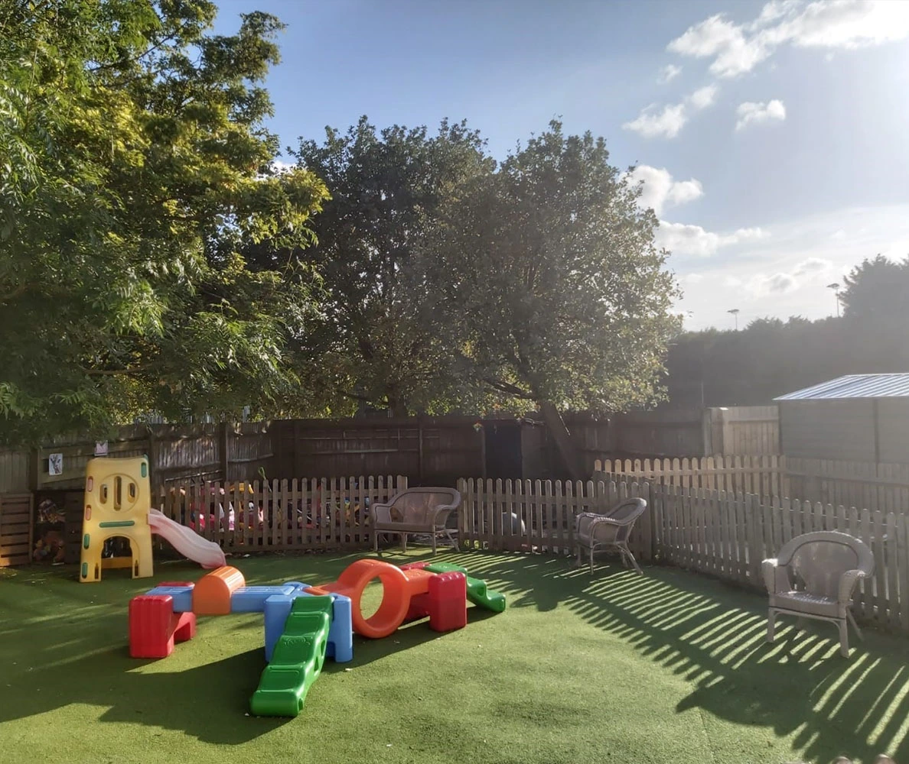

Rooms & Staff
Three specialist rooms, each designed around the developmental stage of your child.

Star Room
Our youngest children are cared for in the Star Room, a calm and nurturing environment focused on building secure attachments. Small group sizes ensure every baby receives attentive, personalised care.
Activities are sensory-led and designed to support early physical development, communication and exploration at a pace that suits each individual child.
Moon Room
The Moon Room is a busy, creative space for growing toddlers. As children become more mobile and curious, the room is designed to encourage independence, imaginative play and early language development.
Key staff build strong relationships with each child, supporting the transition from baby room to pre-school at the right time for them.
Sun Room
Our pre-school room prepares children for the transition to Reception. Following the Early Years Foundation Stage curriculum, children engage in structured activities alongside free play, building the skills and confidence they need for school.
We also have a dedicated sensory area, opened in 2019, used for quiet play and individual work with key staff and our SENCO.
Outdoor Play
The nursery has two enclosed outdoor play spaces, for the exclusive use of our children. Fresh air and outdoor exploration are a daily part of life at Banbury School Day Nursery, whatever the season.


Our Team
Our nursery is staffed by trained and experienced early years practitioners. We encourage students from college and secondary school — all students are additional to our ratios and never left unsupervised.
Name
RoleShort bio or description of the staff member's experience and role in the nursery.